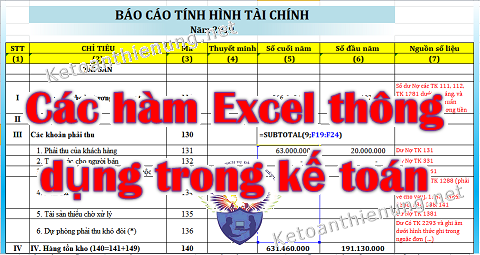

Hướng dẫn
Các bậc thuế môn bài năm 2025 mới nhất
Quy định về lệ phí môn bài năm 2025 mới nhất: Các mức nộp thuế môn bài 2025 cho hộ cá nhân kinh doanh và Doanh nghiệp t…
Kho hướng dẫn, biểu mẫu, công cụ và tài nguyên chuyên môn giúp tra cứu, áp dụng và triển khai công việc kế toán nhanh hơn.
Quy định về lệ phí môn bài năm 2025 mới nhất: Các mức nộp thuế môn bài 2025 cho hộ cá nhân kinh doanh và Doanh nghiệp t…

Các bút toán kết chuyển cuối kỳ theo Thông tư 200 và 133 như: Hạch toán kết chuyển thuế GTGT, kết chuyển lãi lỗ, Doanh…

Điều kiện ghi nhận tài sản cố định hữu hình; Điều kiện ghi nhận TSCĐ vô hình; Các tiêu chuẩn ghi nhận Tài sản cố định t…

Các hàm Excel thông dụng trong kế toán thường dùng lên sổ sách, tính lương, kho, nhập xuất tồn, công nợ: Hướng dẫn cách…
Các hành vi bị nghiêm cấm trong lĩnh vực lao động hiện nay đang được quy định tại điều số 8 của Bộ luật lao động số 45/…

Theo Thông tư 200 có 5 hình thức ghi sổ kế toán, theo Thông tư 133 có 4 hình thức ghi sổ kế toán, Kế toán Diệu Tâm xin…
Quy định về các khoản chi bị khống chế mức được tính vào làm chi phí được trừ khi tính thuế TNDN mới nhất năm 2026 theo…

Quy định về các khoản chi phí được trừ khi tính thuế TNDN theo Nghị định 320/2025/NĐ-CP hướng dẫn Luật Thuế thu nhập do…

Các loại sổ Nhật ký - Chứng từ và Bảng kê theo hình thức Nhật ký - Chứng từ theo Thông tư số 99/2025/TT-BTC Trong hình…

Hướng dẫn cách đặt phần mềm kế toán Fast bằng video chi tiết và cụ thể. - Sau khi đã tải phần mềm kế toán Fast Accounti…

Quyết định 15 đã được thay thế bằng Thông tư 200/2014/TT-BTC, trong đó có 1 số tài khoản đã được loại bỏ. Kế toán Diệu…
.png)
Hướng dẫn cách đánh giá lại Tài sản cố định trên phần mềm Misa Khi có nhu cầu đánh giá lại, bộ phận kế toán sẽ phát sin…